Three questions for any agent harness: what faults does it survive, what records does it keep, and which parts behave the same way every time?
Related documents: 31-observability-alerting.md (alert routing), 32-security-red-team-log.md (guard testing method), 41-support-known-issues-faq.md. Path and role names follow 30-sre-runbooks.md.
Terms
- Chaos test: breaking something on purpose to see whether the system survives.
- Oracle: an independent source of truth used to grade a guard.
- Mutant: a deliberately broken copy of a guard. A good suite fails on it.
- Deterministic: the same input always gives the same output. Model judgement is not deterministic.
1. Summary
| Question | Answer |
|---|---|
| Does OGL Cortex ship a chaos programme? | No scheduled fault injection against the fleet. It ships fault classes to rehearse (section 2.3) and strong deliberate tests for guards and sentinels |
| What gets tested on purpose? | Guards (real-shell oracle, mutants, replay over real command history), sentinels (fixture suites with mutants and self-tests), fixes (hunter passes) |
| One telemetry standard? | The event log is the reference format. Sentinel and guard logs use their own line shapes; section 3.3 lists the differences |
| How much is deterministic? | Guards, sentinels and the ship wrapper are deterministic. Orchestration decisions are model judgement. A few hooks call a model |
2. Chaos and stress
2.1 Fault classes a single-host fleet meets
| Fault class | Typical trigger | What protects you |
|---|---|---|
| Disk flood | A model download, a scanner walking the wrong directory, a container build | Disk sentinel, floor guard, infra-watch disk watch, 2x model rule |
| Swap saturation | Many seats plus a container VM plus a local model | Swap watch; no deploys under heavy swap; stop heavy jobs |
| Background spawn storm | A Stop hook that starts claude -p sessions, firing in several seats at once |
Brake file checked first in the hook; stagger |
| Shared dependency broken under live load | Pruning a package cache that running MCP servers import from | Shared-surface guard |
| Daemon restarts | Cleanups, network dips, external pm2 restart |
Storm watch, commander watch, crash relay |
| Provider limits | Weekly cap, rate limits, free-tier 429s | Quota ledger, auth sentinel, pre-reset burn |
| Billing holds | Declined card | Billing alerts, site watchers |
| Wrong-account credential writes | OAuth flow finished with the wrong account | Account guard, identity check |
| Evicted LaunchAgents | Jobs without RunAtLoad or KeepAlive lost on restart |
Pre-restart inventory of ancillary services |
| Wedged seat | Process up, model not reasoning (for example a session-limit screen) | Session liveness watch; PID and heartbeat alone do not prove reasoning |
Most serious stress on a single-host fleet is self-inflicted by fleet work: a scan, a model, a storm, a prune. External faults are rarer. Memory and disk pressure is the dominant failure mode.
2.2 Deliberate tests that ship with the harness
| Target | Method | Pass bar |
|---|---|---|
| Shared-surface guard | Real-shell oracle: each probe shape run in bash, zsh and sh, in script and inline forms, under sandbox-exec, with a must-find control first that voids the run on a miss |
MISS 0, over-flag 0; every mutant killed |
| Any guard change | mutants.py, unit tests (must-flag and must-allow), replay_diff.py over real command history |
Tests red on live, green on candidate; only intended verdict changes in the replay |
| Heartbeat sentinel | Fixture cases including a forged heartbeat and a reload case, plus mutants | All fixtures pass; mutants red |
| Session liveness watch | Self-test with stale, fresh, process-down and orphan cases, and a named mutant | All PASS lines |
| Auth sentinel | "Drive it to fail once": a bogus model id and a sink file instead of Telegram | Alert written to the sink |
| Account guard | Live positive control with an invalid address | BLOCK line in the guard log |
| Send guard and fail-closed paths | Corpus replays and mutant suites | Mutants killed; no new false positives on the corpus |
| Any guard, hook or fix | hunter.sh fenced pass on one claim |
Reachable findings fixed test-first |

2.3 Rehearsals worth running
These faults have no shipped automated test. Run each once on a quiet night with the owner's go, and record the result.
| Rehearsal | How | Pass bar |
|---|---|---|
| Reboot recovery | Planned host restart | pm2 resurrects the daemon; every enabled seat writes a heartbeat within one interval; every launchd sentinel writes a fresh .alive |
| Daemon kill | pm2 stop cortextos-daemon, wait, pm2 start cortextos-daemon |
Storm watch logs the event; crons catch up once; seats resume |
| Telegram loss | Block the Bot API host for 10 minutes | Poller logs fetch failed, recovers without a restart; no messages lost |
| Login loss | Point the auth sentinel at a bogus model id with a sink | Alert of kind auth or probe lands in the sink |
| Guard down | Rename a guard file for one minute in a test seat | Liveness canary reports a landed write |
3. Telemetry
3.1 Where records go

3.2 Line shapes
Event log (the reference format), one JSON object per line, file named by UTC date:
{"id":"1767225600-orchestrator-a1b2c","agent":"orchestrator","org":"example","timestamp":"2026-01-01T00:00:00Z","category":"action","event":"task_dispatched","severity":"info","metadata":{"to":"ops","task":"rotate webhook secret"}}id is epoch seconds, agent name and 5 random characters. timestamp is ISO 8601 UTC to the second. Writer: src/bus/event.ts.
Sentinels can write into the same family under a non-seat agent name such as sentinel:
{"id":"1767225630-sentinel-x9y8z","agent":"sentinel","timestamp":"2026-01-01T00:00:30Z","category":"action","event":"disk_sentinel_alert","severity":"info","metadata":{"avail_mb":11233,"kind":"sudden-step"}}Outbound Telegram log:
{"timestamp":"2026-01-01T00:01:00Z","agent":"orchestrator","chat_id":"<chat>","text":"Deployed...","message_id":"1234","parse_mode":"html"}Inbound Telegram log fields: message_id, from, from_name, chat_id, text, timestamp (milliseconds), archived_at (seconds), agent.
Crash and restart logs:
2026-01-01T00:02:00.000Z type=daemon-stop reason=daemon shutdown (SIGTERM) session=<uuid> last_task=...
[2026-01-01T00:03:00Z] HARD-RESTART: Context 80%; ...stdout.log: raw terminal capture with ANSI escape codes. Strip escapes before parsing (strip-ansi or sed 's/\x1b\[[0-9;]*[A-Za-z]//g').
Sentinels (examples of the reference scripts):
2026-01-01T00:04:00Z avail=11233MB state=warn prev=warn orch=sudden-step
2026-01-01T00:05:00Z | proc=status | watched=4 | IDLE-LATENT=0 | WEDGE(alarms)=0 | K=3 | orchestrator:OK(0h0m,ctx) | ...
2026-01-01T00:06:00Z ok proc_up=1 ctx_age=0s ctx_basis=ctx-growth decided_by=primary (TTL 36000s)Quota ledger (JSON, ts key):
{"ts":"2026-01-01T00:05:00Z","reading":{"five_hour":{"pct":11},"seven_day":{"pct":62},"source":"api"}}Guard logs (~/.claude/hooks/<guard>.log), one line per verdict:
2026-01-01T00:07:00Z PASS Bash 0 issues: 'Deployed...'
2026-01-01T00:08:00Z ops BLOCK ['claude_config'] '<command>'Guard logs are fleet-wide: one file holds verdicts for every seat that runs the guard. Not every guard writes a log; the brief guard and the future-time guard report only through their exit code and stderr.
3.3 Where the formats differ
| Dimension | Variants |
|---|---|
| Timestamp key | timestamp (events, Telegram), ts (quota, pressure), at (prompt router), bare prefix (sentinels, guards), bracketed prefix (restarts.log) |
| Precision | Seconds (events strip milliseconds); milliseconds (inbound log, crashes.log) |
| Line shape | JSON, key=value, pipe-delimited, free text, raw TTY |
| Id scheme | Epoch seconds plus agent plus random (events); epoch milliseconds (inbox ids); task_<ms>_<rand> (tasks); Telegram integers |
| Clock zone in content | UTC (Z) everywhere |
| Clock zone in schedules | Host local time for 5-field crons and launchd calendar jobs |
| Clock zone in file names | UTC for event files; the seat's local date for daily memory files |
Practical effect: a question like "what happened at 05:03" needs several greps with different patterns. If you build a merged timeline, normalise to the event-log shape: timestamp key, ISO 8601 seconds, UTC.
Recommended standard for new logs. JSON lines with timestamp (ISO 8601 UTC, seconds), agent, event, severity, and a metadata object. Write through cortextos bus log-event when a seat is the producer.
3.4 Retention
- The framework does not rotate
stdout.log. Rotate it yourself (for example a launchd job that moves files over a size limit tostdout.log.1). - Event files are split per day per seat, so size-based cleanups usually spare them.
- A cleanup that empties large log files erases their history. Archive before you truncate.
- Guard logs live outside
$CTX_ROOTand need their own rotation.
4. Determinism: rule versus judgement
4.1 Hooks in a reference orchestrator seat
| Event | Hook | Class |
|---|---|---|
| PermissionRequest, PreToolUse AskUserQuestion | cortextos bus hook-permission-telegram, hook-planmode-telegram, and the AskUserQuestion relay |
Deterministic relay |
| PreToolUse Bash and send MCPs | orwell-lint.py |
Deterministic (regex and word lists) |
| PreToolUse Google Workspace MCP | gws-account-guard.py |
Deterministic (account list) |
| PreToolUse Bash | shared-surface-guard.py |
Deterministic (shell parser) |
| PreToolUse Bash | brief_guard.py |
Deterministic |
| PreToolUse Bash, Write, Edit | future_time_guard.py |
Deterministic, clock-dependent |
| PreToolUse Bash | attribution-lint.py |
Deterministic, shadow tier |
| Stop | cortextos bus hook-idle-flag |
Deterministic |
| Stop | memory consolidation hook | Spawns a model in the background |
| SessionEnd, PreCompact | cortextos crash-alert, hook-compact-telegram, checkpoint script |
Deterministic |
| SessionEnd, PreCompact | memory digest | Spawns a model in the background |
| SessionStart | inject script; after_compact.py |
Deterministic |
| PostToolUse | compaction meter; fix-commit trigger | Deterministic |
| PostCompact | save_summary.py |
Deterministic |
| UserPromptSubmit | client recall hook | Deterministic |
| UserPromptSubmit | prompt router | Model call on every owner message (headless small model, one turn). Injects nothing on timeout or failure |
All of these are type: command hooks. A command hook can still call a model; check the script, not the hook type.
4.2 Schedulers
| Scheduler | Deterministic part | Judgement part |
|---|---|---|
| cortextOS daemon crons | When the prompt fires (30-second tick; one catch-up fire after downtime) | Everything after: the prompt is text a model interprets |
| launchd sentinels | Shell scripts end to end | None, except when a script pages a seat for a decision |
| pm2 loops | Schedule and pass or fail on exact output | The auth probe calls a model as its test subject, by design |
Fires are not exact. A cron can run some minutes after its slot if the seat is busy. Design prompts to tolerate late fires.
4.3 The design pattern

Model judgement does the work. Deterministic guards fence its outputs: every send passes the send guard, every dispatch passes the brief guard, every write to a shared surface passes the surface guard.
Not fenced deterministically:
- The decision to call something "done". It rests on seat rules ("a return is a claim; run its BAR") and on the auditor, both model judgement. The brief audit script helps, but a seat must choose to run it.
- Memory written by consolidation and digest hooks.
- The auditor's verdict. The artefacts it checks are deterministic; the verdict is not.
5. Test suites
| Suite | How to run | What it proves |
|---|---|---|
| cortextOS framework | npm test (Vitest) in $CORTEX_HOME |
The source tree. Run it before and after any framework change |
| Framework CI | .github/workflows/ci.yml runs npm test on pushed commits |
Only commits that reach a remote with CI |
| Guard packets | python3 tests/test_<guard>.py, python3 mutants.py, oracle and replay scripts in each packet folder |
The candidate guard, at install time |
| Sentinel suites | test-*.sh beside the sentinel scripts; self-test modes |
Sentinel logic, at build time |
| Hook builds | Each build folder's tests/ |
The hook, when its build copy is byte-identical to the installed file (diff -q) |
| Fleet lint | Nightly launchd job | Seat config and instructions, every night |
Two structural limits:
- Install-time proof, not standing proof. Guard suites prove the guard once. Nothing re-runs them after install unless you schedule it. Freeze each gated version as
<file>.gated-<sha>so the live file can be diffed against the version that passed. - No composition suite. Each guard is tested alone. Several PreToolUse hooks can fire on one Bash call. Interactions between them are where bugs hide; add a test that runs the full hook chain on a fixed set of calls.
6. Enterprise items and their equivalents
| Enterprise item | Fit | Closest equivalent |
|---|---|---|
| Chaos platform and game days | No | Section 2.3 rehearsals; guard oracles; hunter passes |
| Load and soak testing | No | Disk and swap sentinels measure real load continuously |
| Distributed tracing | No | Event ids and Telegram message ids |
| Central log store | No | Plain files; the dashboard reads event JSONL |
| Log schema standard | Yes, cheaply | Section 3.3 recommendation |
| Deterministic replay of agent runs | No | Guard replay over real command logs, which is deterministic |
| CI gate on every change | Partly | Install scripts that refuse without an auditor PASS |
Design notes
- Run the framework suite on a schedule and page on red.
- Re-run each live guard's suite against the installed file nightly.
- Make model-calling hooks asynchronous where the seat does not need the result before it reads the message.
Source files
src/bus/event.ts(event format)src/bus/hooks.ts(hook dispatch)src/bus/metrics.ts(event reader)src/daemon/cron-scheduler.ts(tick and catch-up)package.json,.github/workflows/ci.yml(framework tests)